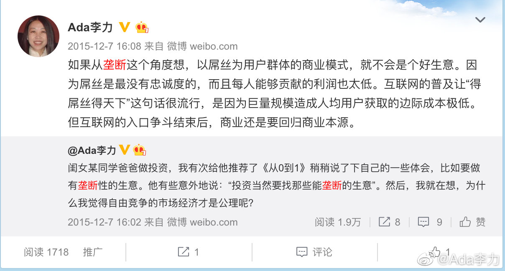

我给#姣姣#讲军备竞赛带来的坏处，大家都很努力地升级设备，但最后谁也没获得更多好处，倒是比以前还焦虑。我让她想想，还有哪些领域也存在这种现象。其实，东亚社会里的学生补习班就很符合。
我在给姣姣举更多例子，用的是商业领域的竞争，比如企业主购买更高级技术和设备，但最后的利润率倒是会下降。姣姣问，如果技术升级还有努力工作都不能带来利润的话，那还有什么好方法。
我说垄断是最好的商业。姣姣第一反应是：“你怎么能这么想呢？垄断对消费者很不好”，我简单地解释了下：考虑问题时，要看你屁股坐在哪里，企业家追求利润是第一责任。但想起来，四年前，我跟姣姣的反应如出一辙。
某些教育真是有毒。
我在给姣姣举更多例子，用的是商业领域的竞争，比如企业主购买更高级技术和设备，但最后的利润率倒是会下降。姣姣问，如果技术升级还有努力工作都不能带来利润的话，那还有什么好方法。
我说垄断是最好的商业。姣姣第一反应是：“你怎么能这么想呢？垄断对消费者很不好”，我简单地解释了下：考虑问题时，要看你屁股坐在哪里，企业家追求利润是第一责任。但想起来，四年前，我跟姣姣的反应如出一辙。
某些教育真是有毒。
- 